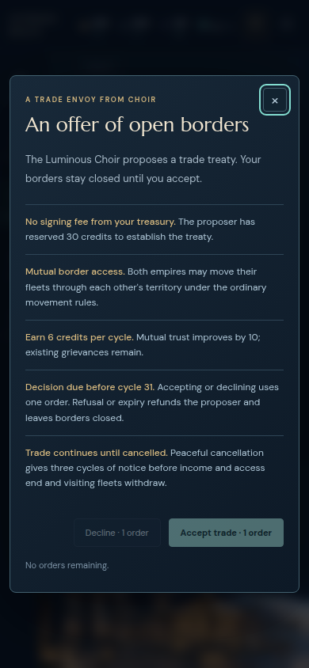
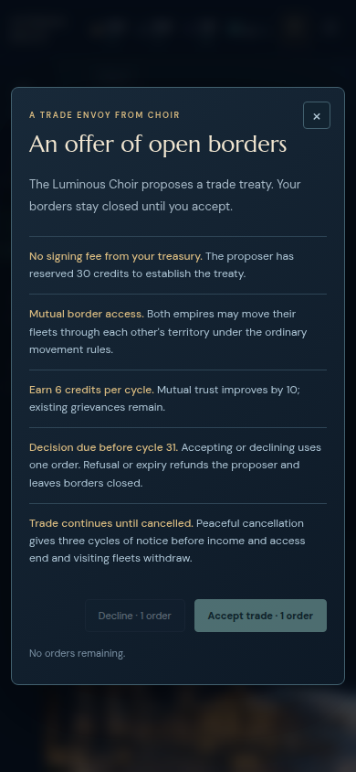
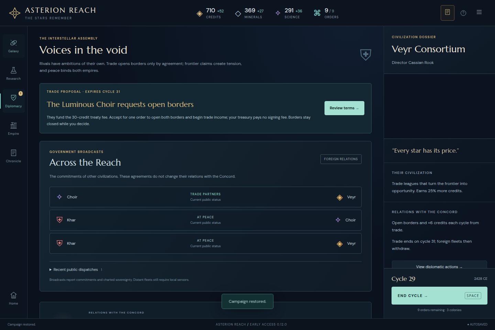
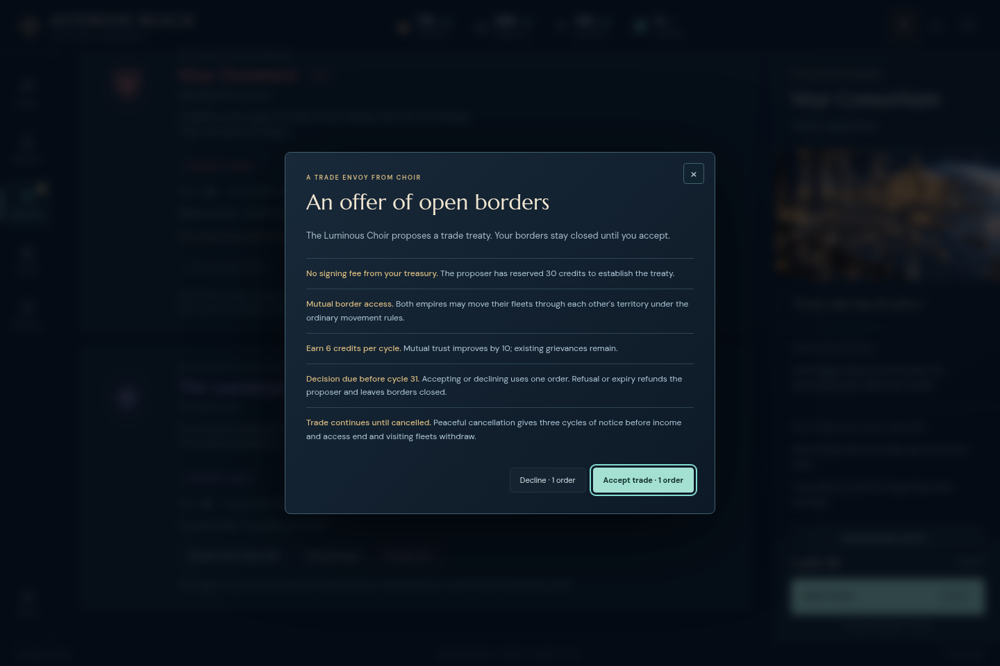
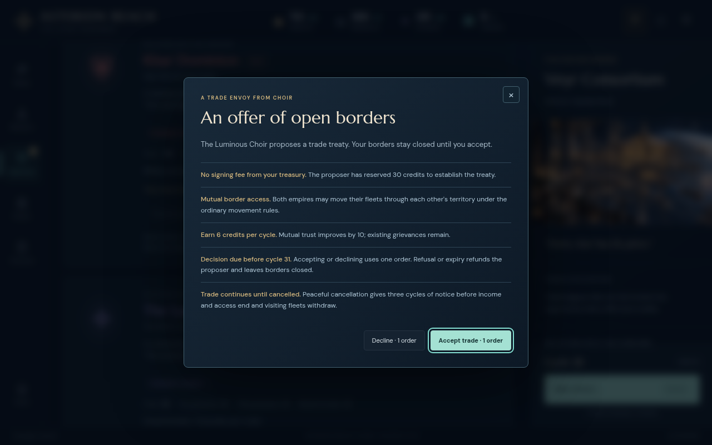
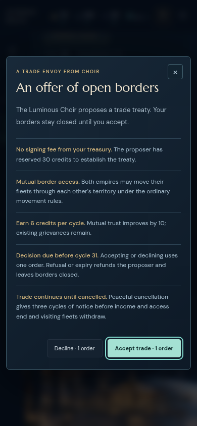
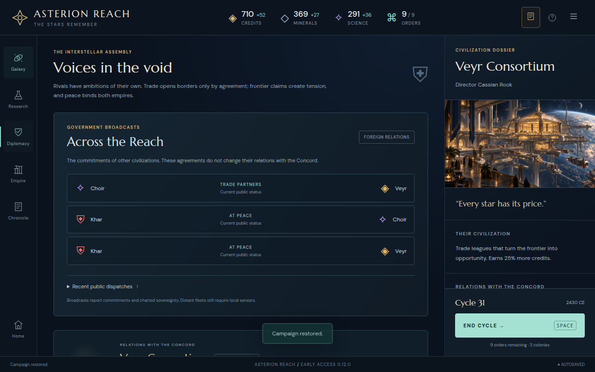
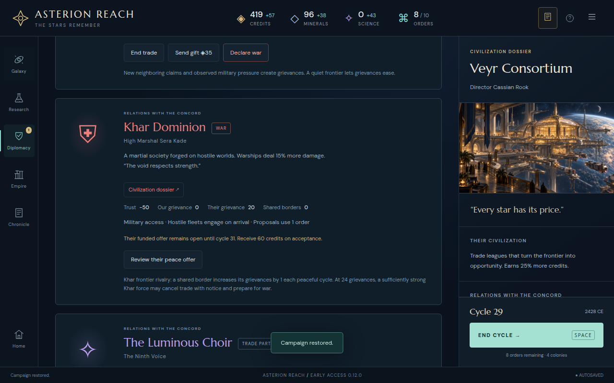
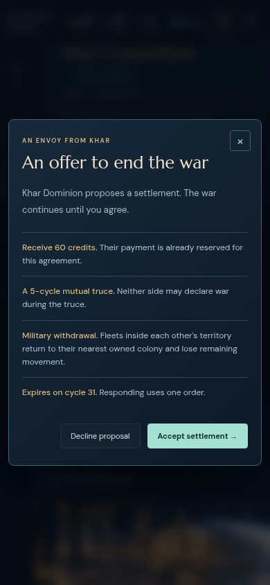

Accepted after the narrow keyboard-focus correction; no remaining blocker. The frozen0.12 production UI was checked at1440×960,1280×800 and390×844. The initial zero-order dialog could leave focus behind it; a narrowly corrected final candidate is reviewed separately below.
The zero-order offer now initially focuses the enabled close button. Tab and Shift+Tab stay within the dialog, and Escape restores focus to Review their trade offer. Disabled response actions remain disabled, and inspection leaves the entire save unchanged. Exact focus trace and final compiled-asset hashes.

Only the narrow keyboard path was independently retested on5186. The complete consent review remains attributable to unchanged5185; engine source stayed unchanged.
At zero orders, both response buttons are disabled. Opening the terms leaves focus on the background Review their trade offer button; Tab moves to the background dossier action. This is a real keyboard containment defect. Normal enabled-response offers focus their primary action correctly and Escape restores the trigger. Original focus trace.
All29 focused diplomacy/trade tests passed. The pinned independent audit has eight scenarios covering historical exact settlement, changed-policy cancellation, decline/manual initiation, atomic wrong-kind/duplicate/foreign responses, stale import before expiry processing, replacement after its quiet deadline, binding terms after trust declines and immediate war invalidation.
The cancellation fork starts from the actual cycle20 export with one ordinary endTrade command and then only endTurn. Under historical78e3cff, trade closed23 and automatically reopened24. Under Stage12 it closes23, stays closed throughout the five-cycle quiet interval, and a new offer created28 is visible29 with borders still closed. Acceptance at29 uses one order, transfers no credits and adds the existing6-credit income. This is a changed-policy counterfactual, not a claim that the historical human campaign behaved differently.
Portable pinned engine rerun · Engine results and fixture hashes · UI checks and exact compiled-asset hashes · UI fixture provenance
node engine-review.mjs --repo /path/to/awesome_4x --out engine-evidence.jsonThe script archives exact engine commit123cee1a4e2b8175713468b2d8d9c3fc0d5787cf and verifies the preserved input hashes. Later repository changes do not alter its measured source.
Actual original cycle20 · Exact replay-verified preaccept29 checkpoint · Actual post-settlement29 export · Normal-command Stage12 cancellation fork · Ordinary-command zero-order fixture · Synthetic stale-import edge
Actual UI accepted-trade export · Actual UI declined-trade export · Actual UI peace/split reproduction
Engine source is pinned. UI additions were integrated working-tree changes at the original frozen build; compiled-asset hashes identify the reviewed bytes. No repository source edits were made during this review.







